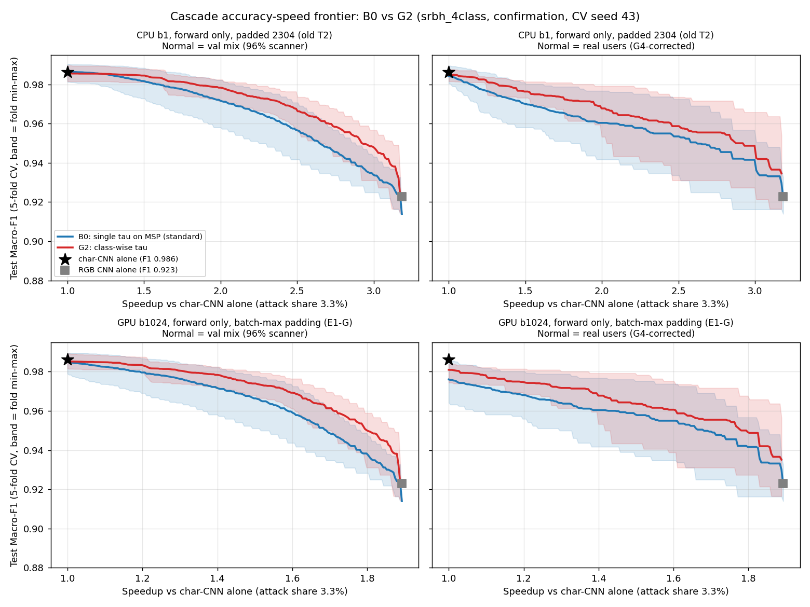
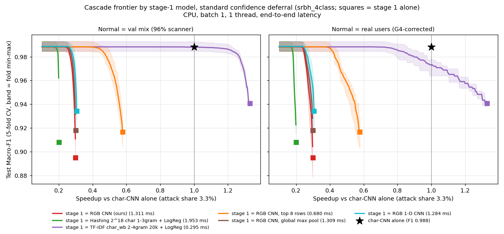
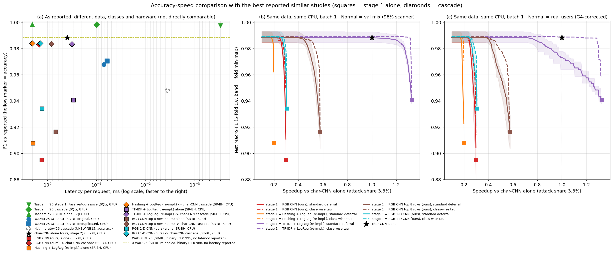

학부 졸업논문 · 보고일 2026-10-14 · 직전 보고(2026-10-04) 이후분
직전 보고 이후 한 일은 세 묶음입니다. 10월 7일의 실험 다섯 가지(2절), 정해 주신 "개선"의 기준을 곡선 비교로 옮긴 것(3절), 그리고 판정 기준을 다시 고정한 뒤 돌린 확인 실험입니다(4~11절). 마지막으로 유사 연구가 보고한 최고 수치를 다시 읽어 같은 그래프에 올렸습니다(12절).
결론부터 말씀드리면, 제안한 2단 구조(이미지 CNN → 문자 단위 CNN)는 가장 좋은 유사 연구의 구조보다 정확도–속도 그래프에서 위에 있지 않습니다. 그래서 "개선"이라고 쓰지 않고, 왜 위가 아닌지를 측정으로 보인 것을 논문의 중심으로 옮겼습니다.
이 보고서의 용어: "2단 구조"는 1차 모델이 모든 요청을 보고 확신이 낮은 요청만 2차 모델로 넘기는 구성, "넘김 비율"은 2차로 넘어간 요청의 비율, "표준 넘김"은 1차의 최대 확률이 하나의 임계값보다 낮으면 넘기는 규칙, "클래스별 임계값"은 1차가 예측한 클래스마다 임계값을 따로 두는 규칙입니다. "속도 배수"는 2차 단독의 요청당 지연을 2단 구조의 지연으로 나눈 값으로, 1보다 커야 2단 구조가 이득입니다. 별도 표시가 없으면 공격 비율 3.3%(선행 연구가 가정한 배포 비율)로 환산한 값입니다.
지난 미팅에서 "넘김 판단에 쓰는 수치 자체가 맞지 않을 수 있다"는 지적을 받았습니다. 이 지적을 직접 확인하는 실험과, 지난 보고의 다음 계획에 있던 실험 네 가지를 함께 했습니다. 판정 기준은 이번에도 측정 전에 연구 기록에 먼저 적었습니다. 이 절부터는 배포 넘김 비율이라는 값을 주 지표로 씁니다. 공격이 3.3%, 정상이 96.7%인 서비스 트래픽을 가정했을 때 전체 요청 중 2차로 넘어가는 비율이며, 공격 넘김 비율에 0.033, 정상 넘김 비율에 0.967 을 곱해 더한 값입니다. 시험 데이터는 공격이 75%라서 그 비율 그대로 넘김을 세면 서비스 조건과 다른 답이 나오기 때문입니다.
1차가 낸 최대 확률 대신, 1차 내부 표현(마지막 풀링 뒤 128차원)이 학습 데이터에서 얼마나 떨어져 있는지를 넘김 점수로 썼습니다. 분포 밖 탐지 연구에서 널리 쓰는 네 가지입니다.
| 넘김 점수 | 배포 넘김 비율 | 최대 확률 대비 | 1차 오답을 가려내는 능력(AUROC) | 판정 |
|---|---|---|---|---|
| 최대 확률(기준) | 43.7% | — | 0.938 | — |
| 마할라노비스 거리 | 90.8% | +108% | 0.203 | 기각 |
| 상대 마할라노비스 거리 | 99.8% | +128% | 0.707 | 기각 |
| k-최근접 이웃 거리 | 78.4% | +79% | 0.695 | 기각 |
| 신뢰 점수(TrustScore) | 63.7% | +46% | 0.872 | 기각 |
5겹 교차검증 평균. 문자 단위 CNN 단독의 Macro-F1 에 0.5%p 이내로 닿는 데 필요한 넘김. 채택 기준은 넘김 20% 이상 감소였습니다.
네 점수 모두 최대 확률보다 유의하게 더 많이 넘겼습니다. 특히 마할라노비스 거리는 오답을 가려내는 능력이 0.20 으로 방향이 반대였습니다. 1차가 틀리는 요청이 학습 분포 바깥에 있는 것이 아니라 클래스 덩어리가 겹치는 한가운데에 있다는 뜻입니다. 지난 보고의 라벨 점검(1차가 확신하고 틀린 요청의 70.9%가 라벨과 원문이 맞지 않음)과 같은 그림입니다. 지적하신 내용에 대한 답은 "이 데이터에서는 무엇으로 재는가가 병목이 아니다"입니다. 확률을 다르게 가공한 신호(지난 보고)와 표현 거리(이번) 모두 최대 확률보다 오답 순위를 잘 매기지 못했습니다.
이 데이터의 정상 요청은 96%가 스캐너가 보낸 것이고 실제 사용자 요청은 4% 정도입니다. 검증 데이터 전체로 잰 정상 넘김 비율은 44.5%였는데, 실제 사용자 요청만 따로 세면 69.4%로 24.9%p 높았습니다(다섯 fold 모두 +22.8~+28.0%p). 따라서 검증 데이터로 계산한 속도 배수는 실제 사용자 트래픽에서는 낙관적입니다. 지난 보고의 1.34배(교차검증 평균)는 실제 사용자 기준으로 1.01배가 됩니다. 이후 속도 배수는 두 기준을 함께 적습니다.
| 1차 폭 | 1차 지연(ms) | Macro-F1 | 배포 넘김 비율 | 속도 배수(공격 3.3%) |
|---|---|---|---|---|
| 절반 | 0.171 | 0.9816 | 49.3% | 1.42 |
| 현재 | 0.292 | 0.9798 | 39.1% | 1.44 |
| 두 배 | 0.666 | 0.9822 | 73.1% | 0.68 |
시험 데이터, CPU·배치 1, 순전파만 잰 지연(5절에서 다시 잽니다). 채택 기준은 속도 배수 20% 이상 향상이었습니다.
폭을 절반으로 줄이면 1차 지연은 41% 줄지만 정상 요청의 확신도가 낮아져 넘김이 늘었고, 둘이 상쇄돼 배수는 그대로였습니다. 두 배로 키우면 1차가 너무 비싸집니다. 둘 다 기각이고 폭은 현재대로 둡니다.
| 2차 | 2차 지연(ms) | 2차 단독 Macro-F1 | 운영점 Macro-F1 | 기대 지연(ms) |
|---|---|---|---|---|
| 문자 단위 CNN(현재) | 0.980 | 0.9853 | 0.9794 | 0.738 |
| 양방향 LSTM | 7.277 | 0.9592 | 0.9540 | 2.585 |
| 문자 n-gram TF-IDF + 로지스틱 회귀 | 0.290 | 0.9382 | 0.9343 | 0.429 |
시험 데이터, CPU·배치 1, 공격 3.3% 가정. 1차는 같은 이미지 CNN.
양방향 LSTM 은 모든 구간에서 문자 단위 CNN 에 뒤집니다. TF-IDF 는 Macro-F1 0.94 아래 구간에서만 더 빠르고, 그 위로는 올라가지 못합니다. 2차는 문자 단위 CNN 으로 유지합니다. 다만 이 실험에서 TF-IDF 모델 하나만 쓰는 것이 1차 이미지 CNN 하나만 쓰는 것보다 빠르고 정확하다는 것이 보였고, 이 관찰이 9절의 재구현 실험으로 이어졌습니다.
공격 요청에 URL 인코딩을 한 번 더 입히면 공격 요청의 넘김 비율이 26.2%에서 46.3%로 1.77배 늘고, 2단 구조의 공격 판정률은 99.3%에서 85.5%로 떨어졌습니다. 클래스별 임계값을 쓴 경우도 부풀려지는 정도는 비슷했습니다(1.76배). 넘김 규칙을 바꿔서 이 약점이 더 커지지는 않았지만, 2단 구조 자체가 "정확도는 비슷한데 지연만 늘리는" 공격에 노출돼 있다는 점은 논문의 한계로 적습니다.
지난 미팅에서 정해 주신 기준은, 가장 좋은 유사 연구와 비교해 정확도(세로)–속도(가로) 그래프에서 조금이라도 위에 있으면 "개선"이라 쓸 수 있다는 것이었습니다. 이 기준은 곡선 전체를 봅니다. 그동안의 판정은 "문자 단위 CNN 단독의 정확도에 닿는 데 필요한 넘김"이라는 곡선 끝의 한 점만 봤고, 클래스별 임계값은 그 한 점에서 기각됐었습니다. 같은 교차검증 결과를 곡선 전체로 다시 보면 답이 달라집니다.
| 속도 배수 | 1.00 | 1.25 | 1.50 | 1.75 | 2.00 | 2.50 |
|---|---|---|---|---|---|---|
| 정상 = 검증 데이터 전체 | −0.16 (2/5) | +0.22 (4/5) | +0.67 (4/5) | +1.17 (5/5) | +1.72 (5/5) | +2.57 (5/5) |
| 정상 = 실제 사용자 | +0.32 (4/5) | +1.21 (5/5) | +1.76 (5/5) | +1.96 (5/5) | +2.48 (5/5) | +2.64 (4/5) |
클래스별 임계값에서 표준 넘김(최대 확률, 임계값 하나)을 뺀 Macro-F1 차이(%p). 괄호는 클래스별 임계값이 위인 fold 수. 각 속도에서 "그 속도 이상으로 낼 수 있는 최고 정확도"끼리 비교.
속도 1.25배 이상에서는 클래스별 임계값이 대부분의 fold 에서 위였습니다. 다만 이 표는 클래스별 임계값을 처음 찾아낸 바로 그 데이터로 기준을 바꿔 다시 본 것이라 그대로 "개선"이라 쓰면 결과를 보고 기준을 고른 셈이 됩니다. 그래서 이 기준을 판정 규칙으로 먼저 적어 두고, 분할을 바꿔 다시 학습한 교차검증으로 확인하기로 했습니다(4절, 7절). 가로축의 속도 배수는 당시의 지연 측정값으로 계산한 것이고, 5절에서 그 측정 방식 자체를 다시 봤습니다.
이번 주 실험은 모두 측정 전에 판정 기준을 문서로 고정하고 그 문서를 먼저 커밋한 뒤 시작했습니다. 고정한 내용은 다음과 같습니다.
결과를 본 뒤에 "탐색"을 "확인"으로 올리지 않는다는 것과, 시험 데이터로는 어떤 선택도 하지 않는다는 것도 함께 적었습니다.
그동안의 지연은 두 가지 점에서 2단 구조에 유리하게 재어져 있었습니다. 1차는 이미 만들어 둔 이미지를 넣고 순전파만 쟀기 때문에 요청을 이미지로 바꾸는 시간이 빠져 있었고, 2차는 모든 요청을 2,304바이트로 채워 넣었기 때문에 실제보다 느리게 재어졌습니다. 이 데이터의 요청 길이는 중앙값 97바이트, 상위 1%가 349바이트입니다. 두 가지를 바로잡아 다시 쟀습니다.
| 구성 요소(중앙값, ms) | 스레드 1 | 스레드 4 | 스레드 8 |
|---|---|---|---|
| 1차: 요청 → 이미지 변환 | 0.407 | 0.540 | 0.540 |
| 1차: 순전파 | 0.879 | 0.586 | 0.399 |
| 1차 합계 | 1.311 | 1.130 | 0.945 |
| 2차: 2,304바이트로 채운 입력(기존 방식) | 2.990 | 1.691 | 1.090 |
| 2차 합계: 실제 길이 입력 | 0.393 | 0.314 | 0.240 |
| 속도 배수의 상한(2차 ÷ 1차) | 0.300 | 0.278 | 0.254 |
| 속도 배수(공격 3.3%, 표준 넘김) | 0.268 | 0.251 | 0.231 |
| 참고: 기존 방식으로 계산한 속도 배수 | 1.460 | 1.356 | 1.321 |
CPU·배치 1, 검증 데이터에서 뽑은 2,000건을 30회 반복. 채우지 않은 입력과 채운 입력의 판정은 39,891건 중 5건만 달랐고 Macro-F1 은 0.9860 과 0.9857 로 같았습니다.
공정하게 재면 1차 이미지 CNN 이 2차 문자 단위 CNN 보다 3.3배 느립니다. 이 조건에서는 넘김을 아무리 줄여도 2단 구조가 2차 단독보다 빠를 수 없습니다. 미리 적어 둔 철회 조항이 세 스레드 조건 모두에서 발동했으므로, "CPU·배치 1 에서 2단 구조가 2차 단독보다 빠르다"는 주장은 철회합니다. 지난 보고의 1.22배·1.45배, 2.2절의 1.01배·1.28배는 측정이 틀린 것이 아니라 "2차 입력을 최대 길이로 채우는 배치"를 전제한 값이므로, 앞으로는 "채움 기준"이라는 조건을 붙여서만 씁니다. 채움을 없애는 것만으로 2차가 7.7배 빨라졌다는 것이 이번 측정의 핵심입니다.
GPU 에서 여러 요청을 묶어 처리하는 조건도 다시 쟀습니다. 묶음 안에서 가장 긴 요청 길이까지만 채우면 속도 배수의 상한은 묶음 32개에서 0.86, 128개에서 1.49, 1,024개에서 1.89였습니다 (2,304바이트로 채우면 3.35, 15.8, 7.9). 지난 보고에서 이상치로 보류했던 GPU·128 의 값은 채움 때문에 부풀려진 것으로 확인됐습니다. 2단 구조가 이득을 볼 여지는 "GPU 에서 큰 묶음으로 처리하는 조건"에만 남고, 그 상한도 2배를 넘지 않습니다.
새로 학습하지 않고 기존 결과를 다시 계산한 것이 세 가지입니다.
첫째, 지난 보고에서 "클래스별 임계값은 기각"이라고 한 판정의 검정력을 계산했습니다. 다섯 fold 의 과잉 넘김 배율은 10.57 에서 8.59 로 18.7% 줄었지만 fold 간 편차가 커서(보정 p 0.58), 실제로 20% 줄이는 효과가 있었더라도 이 설계가 그것을 잡아낼 확률은 7~10%에 불과했습니다. 그 판정은 "효과가 없다"가 아니라 "이 설계로는 판정할 수 없었다"로 읽어야 합니다. 판정 자체는 바꾸지 않고 이 해석을 덧붙였습니다.
둘째, 넘김 비율에 신뢰구간을 붙였습니다. 실제 사용자 요청(550건)의 정상 넘김 비율은 표준 넘김 69.3% [65.3, 73.0], 클래스별 임계값 49.6% [45.5, 53.8] 이고, 검증 데이터 전체(56,906건)는 44.6% [44.1, 45.0] 과 27.4% [27.0, 27.8] 입니다. 실제 사용자 표본이 작아 구간이 넓지만 두 규칙의 구간은 겹치지 않습니다.
셋째, 운영점을 검증 데이터에서 하나만 고르는 방식(곡선에서 가장 좋은 점을 사후에 고르지 않는 방식)으로 두 규칙의 속도 배수를 비교했습니다. 채움 기준으로 표준 넘김 1.34배, 클래스별 임계값 1.75배(+30.3%, 보정 p 0.13, Macro-F1 손실 0.08%p)였고 실제 사용자 기준은 1.01배와 1.28배(+26.1%, p 0.15)였습니다. 방향은 일관되지만 유의하지 않았고, 이 값은 클래스별 임계값을 찾아낸 데이터의 것이라 탐색으로만 적습니다.
4절에서 미리 적어 둔 규칙으로 클래스별 임계값을 다시 판정했습니다. 클래스별 임계값을 처음 찾아낸 분할이 아니라, 난수 씨앗을 바꿔 교차검증을 새로 나누고 두 모델을 처음부터 다시 학습한 결과를 썼습니다(같은 226,048건, 분할과 초기값만 다름). 비교 지점은 미리 정한 네 곳(배포 넘김 비율 48.6%, 35.3%, 25.7%, 18.6%)이고, 통과 조건은 네 곳 모두에서 평균이 위이면서 세 곳 이상에서 다섯 fold 중 네 fold 이상이 위인 것이었습니다.
| 정상 요청의 기준 | 넘김 48.6% | 35.3% | 25.7% | 18.6% | 통과 | 유의확률 |
|---|---|---|---|---|---|---|
| 검증 데이터 전체: 표준 넘김 → 클래스별 임계값 | 0.9852 → 0.9854 | 0.9818 → 0.9845 | 0.9774 → 0.9813 | 0.9717 → 0.9784 | ||
| 검증 데이터 전체: 차이(위인 fold 수) | +0.02 (4/5) | +0.28 (4/5) | +0.39 (3/5) | +0.67 (4/5) | 통과 | 0.32 |
| 실제 사용자: 표준 넘김 → 클래스별 임계값 | 0.9765 → 0.9812 | 0.9702 → 0.9764 | 0.9653 → 0.9726 | 0.9604 → 0.9678 | ||
| 실제 사용자: 차이(위인 fold 수) | +0.47 (3/5) | +0.62 (4/5) | +0.73 (5/5) | +0.74 (5/5) | 통과 | 0.22 |
새 분할의 5겹 교차검증 평균 Macro-F1, 차이는 %p. 유의확률은 fold 별 네 지점 평균 차이에 교차검증용 보정 t 검정을 적용한 값입니다.

판정. 미리 정한 문구 그대로, "클래스별 임계값은 표준 확신도 넘김보다 정확도–속도 곡선이 위이나 통계적 유의성은 확인하지 못했다"까지 쓸 수 있습니다. 실제 사용자 기준에서도 통과했으므로 정상 요청의 범위를 한정하는 단서는 붙지 않습니다. 다만 정직하게 읽으면 효과는 처음 찾아낸 분할의 절반 이하로 줄었습니다. 처음 분할에서는 차이가 +0.21, +0.67, +1.17, +1.72%p 였는데 새 분할에서는 +0.02, +0.28, +0.39, +0.67%p 입니다. 가장 느린 지점의 차이는 사실상 0 이고, 다섯 fold 중 두 fold 는 평균 차이가 0 근처이거나 음수입니다.
운영점의 속도 이득은 기준에 못 미쳤습니다. 검증 데이터로 고른 운영점(문자 단위 CNN 단독의 Macro-F1 에서 0.5%p 이내, 가장 빠른 점)에서 클래스별 임계값은 배포 넘김 비율을 32.3% 에서 23.2% 로 줄이고 다섯 fold 모두에서 더 빨랐습니다. 그러나 이전 방식의 지연으로 계산한 속도 배수는 1.59배에서 1.84배로 15.7% 오르는 데 그쳐, 미리 정한 기준(20% 이상)에 못 미쳤습니다. 처음 분할에서 탐색으로 본 값은 +30% 였습니다. 5절의 공정한 지연으로 계산하면 두 규칙 모두 0.27~0.28배라, 넘김 규칙을 고쳐서 얻는 차이(+2.5%)는 1차 모델의 비용 앞에서 의미가 없습니다.
판정은 위의 새 분할 하나로 하되, 같은 절차를 씨앗 두 개로 더 되풀이해 결과가 얼마나 흔들리는지 함께 보고하기로 미리 정해 두었습니다. 아래 표의 첫 줄은 클래스별 임계값을 처음 찾아낸 분할이고(참고), 둘째 줄이 판정에 쓴 분할입니다.
| 분할 | 곡선 차이: 검증 데이터 전체 | 곡선 차이: 실제 사용자 | 곡선 규칙 | 유의확률 | 운영점 속도 배수(채움 기준) | 이득 |
|---|---|---|---|---|---|---|
| 처음 찾아낸 분할(참고) | +0.94%p | +1.85%p | (통과) | 0.18 · 0.08 | 1.34 → 1.75 | +30.3% |
| 새 분할 1(판정) | +0.34%p | +0.64%p | 통과 | 0.32 · 0.22 | 1.59 → 1.84 | +15.7% |
| 새 분할 2 | +1.66%p | +2.43%p | 통과 | 0.18 · 0.17 | 1.26 → 1.81 | +43.8% |
| 새 분할 3 | +0.64%p | +0.95%p | 통과 | 0.33 · 0.41 | 1.39 → 1.71 | +23.1% |
곡선 차이는 미리 정한 네 지점에서 (클래스별 임계값 − 표준 넘김)의 Macro-F1 차이를 평균한 값. 유의확률은 검증 데이터 전체 · 실제 사용자 순서. 운영점 속도 배수는 검증 데이터로 고른 한 점에서 표준 넘김 → 클래스별 임계값.
새 분할 세 개가 모두 곡선 규칙을 통과했고, 분할·정상 요청 기준·지점을 곱한 24칸 가운데 클래스별 임계값의 평균이 아래인 칸은 없었습니다. 그러나 크기는 +0.34%p 에서 +1.66%p 까지 다섯 배 차이가 났고 어느 분할에서도 유의하지 않았습니다(0.17~0.41). 판정에 쓴 분할이 셋 중 가장 작은 값이었다는 점도 그대로 적습니다. 운영점의 속도 이득은 네 분할 모두 양수였지만 미리 정한 세 조건(20% 이상, 유의, Macro-F1 손실 0.3%p 이하)을 모두 채운 것은 새 분할 2 하나입니다.
두 가지를 더 알게 됐습니다. 첫째, 클래스별 임계값의 운영점 속도는 분할이 바뀌어도 1.71~1.84배로 안정적이었고 흔들린 쪽은 표준 넘김(1.26~1.59배)이었습니다. 이득의 크기가 분할마다 달랐던 것은 단일 임계값이 분할 구성에 민감하기 때문입니다. 둘째, 이미지 CNN 은 씨앗만 바꿔도 교차검증 평균 Macro-F1 이 0.8949, 0.9229, 0.9054, 0.9080 으로 움직였습니다(표준편차 1.15%p). 문자 단위 CNN 은 0.9884, 0.9862, 0.9901, 0.9897(0.18%p)로 여섯 배 안정적입니다. 지금까지의 교차검증 수치는 모두 첫 씨앗에서 잰 것인데, 이 씨앗이 넷 중 이미지 CNN 이 가장 낮게 나온 경우였습니다. 좋은 씨앗으로 바꿔 쓰지 않고, 네 씨앗의 평균(0.9078)을 함께 적겠습니다. 한 번의 교차검증에서 본 1차 모델 사이의 2%p 안팎 차이는 이 잡음과 같은 크기로 읽어야 합니다.
5절에서 1차(이미지 CNN)가 2차보다 느리다는 것이 드러났으므로, 1차 자체를 더 정확하거나 더 빠르게 만들 수 있는지 세 가지 후보로 확인했습니다. 세 후보 모두 색 채널 세 개의 구성과 합성곱 폭은 그대로 두고 한 가지씩만 바꿨습니다. 채택 조건은 측정 전에 정한 세 가지를 모두 만족하는 것입니다. ① 교차검증 Macro-F1 이 지금보다 2%p 이상 높고 ② 후보 세 개에 대한 다중 비교 보정 뒤에도 유의하며(p < 0.05) ③ 이미지 변환을 포함한 1차 지연이 지금 이하일 것.
| 1차 후보 | 바꾼 것 | 파라미터 | Macro-F1 | 지금 대비 | 보정 유의확률 | 지연 (ms) | 판정 |
|---|---|---|---|---|---|---|---|
| 지금의 이미지 CNN | — | 93,988 | 0.8949 ± 0.0140 | — | — | 1.238 · 1.260 | 기준 |
| 위쪽 8행만 입력 | 48×48 이미지 중 앞 384바이트에 해당하는 8행만 사용 | 93,988 | 0.9165 ± 0.0116 | +2.15%p | 0.178 | 0.640 · 0.654 | 탈락(② 미달) |
| 최대값 풀링 | 마지막 평균 풀링을 최대값 풀링으로 교체 | 93,988 | 0.9178 ± 0.0124 | +2.29%p | 0.178 | 1.236 · 1.259 | 탈락(② 미달) |
| 1차원 합성곱 | 같은 세 채널을 2,304 길이의 수열로 펴서 1차원 합성곱 | 31,972 | 0.9341 ± 0.0090 | +3.92%p | 0.009 | 1.205 · 1.234 | 채택 |
5겹 교차검증(시험 데이터 제외, 지금의 1차와 같은 분할). 유의확률은 교차검증용 보정 t 검정에 후보 세 개의 다중 비교 보정을 적용한 값. 지연은 요청 하나를 CPU 스레드 1개로 처리할 때의 중앙값이며 이미지 변환을 포함합니다(같은 실행에서 네 모델을 번갈아 측정).
판정: 1차원 합성곱 후보를 채택합니다. 세 조건을 모두 채운 것은 이 후보 하나입니다. 다섯 fold 모두에서 2.6%p 이상 높았고, 파라미터는 3분의 1 입니다. 지연은 두 번의 측정에서 지금보다 2.7%, 2.1% 낮았는데, 여유가 이 정도뿐이라 "더 빠르다"가 아니라 "느려지지 않았다"로 읽습니다. 나머지 두 후보는 2%p 를 넘었지만 보정 뒤 유의하지 않아 탈락입니다. 이 2%p 는 7절에서 본 씨앗 간 잡음과 같은 크기이기도 합니다.
이 후보는 같은 세 채널을 48×48 로 접지 않고 길이 2,304 의 수열로 읽은 것입니다. 48바이트 떨어진 글자를 위아래 이웃으로 만드는 배치를 없애자 3.9%p 가 올랐습니다. 요청을 이미지로 바꾸는 과정에서 정확도에 도움이 된 것은 채널 구성이고, 2차원으로 접는 배치는 오히려 손해였다는 뜻입니다. "이미지 단독은 문자 모델보다 못하다"는 처음의 음성 결과와 같은 방향입니다.
그런데 속도는 달라지지 않았습니다. 미리 정한 대로 채택된 1차로 2단 구조를 다시 계산했습니다.
| 1차 | 1차 지연 (ms) | 속도 배수의 상한 | 넘김 비율 | 2단 구조 Macro-F1 | 속도 배수 | 실제 사용자 기준 |
|---|---|---|---|---|---|---|
| 지금의 이미지 CNN | 1.311 | 0.300 | 43.7% | 0.9830 | 0.265 | 0.249 |
| 1차원 합성곱(채택) | 1.284 | 0.306 | 29.8% | 0.9839 | 0.281 | 0.265 |
| 위쪽 8행만 입력(탈락, 참고) | 0.680 | 0.578 | 38.8% | 0.9835 | 0.473 | 0.429 |
2차는 문자 단위 CNN(0.393ms)으로 같고, 운영점은 검증 데이터에서 고른 표준 넘김입니다. 상한은 넘김이 하나도 없을 때의 속도 배수(2차 지연 ÷ 1차 지연)입니다. 후보의 지연은 같은 실행에서 잰 지금 모델과의 비율을 5절의 1.311ms 에 곱해 맞췄습니다(실행 사이에 절대값이 4~6% 달라지기 때문입니다).
1차가 정확해져 넘김 비율이 43.7% 에서 29.8% 로 14%p 줄었는데도 속도 배수는 0.27배에서 0.28배가 됐을 뿐입니다. 상한이 0.31 이어서, 넘김을 0 으로 만들어도 2차 단독의 3분의 1 속도를 넘지 못합니다. 지연이 절반인 후보(위쪽 8행)도 0.47배입니다. 요청을 세 채널로 바꾸는 변환만 0.41ms 로 2차 전체(0.39ms)보다 길어서, 합성곱을 아무리 줄여도 이 바닥이 남습니다. 같은 변환을 쓰는 한 이미지 계열 1차는 2차보다 빨라질 수 없고, 따라서 넘김 규칙이나 1차 구조를 고치는 것으로는 속도 이득을 되찾을 수 없습니다.
이 연구는 "1차와 2차가 요청을 서로 다르게 보면(이미지와 문자) 틀리는 요청도 달라서 2단 구조에 유리하다"는 생각에서 출발했습니다. 이 생각이 속도 이득에 정말 필요한지 확인하려고, 1차를 2차와 같은 문자 계열의 값싼 선형 모델로 바꿔 봤습니다. 가장 좋은 유사 연구(Tasdemir 등 2023)가 쓴 "선형 분류기 1차 → 신경망 2차" 구조를 우리 데이터에 옮긴 것이기도 합니다. 2차와 운영점 규칙은 그대로 두었습니다. 미리 정한 규칙은, 선형 1차의 속도 배수가 이미지 1차보다 20% 이상 높으면 "표현이 다른 두 모델을 묶는 것은 속도 이득의 필요조건이 아니다"라고 쓰는 것이었습니다.
| 1차 | 1차 지연 (ms) | 상한 | 1차 단독 Macro-F1 | 오류 겹침 | 넘김 비율 | 2단 구조 Macro-F1 | 속도 배수 | 실제 사용자 기준 |
|---|---|---|---|---|---|---|---|---|
| 이미지 CNN(지금) | 1.311 | 0.300 | 0.8949 | 0.954 | 43.7% | 0.9830 | 0.265 | 0.249 |
| 해싱 n-그램 + 로지스틱 회귀 | 1.953 | 0.201 | 0.9078 | 0.993 | 18.1% | 0.9839 | 0.194 | 0.182 |
| TF-IDF n-그램 + 로지스틱 회귀 | 0.295 | 1.331 | 0.9406 | 0.996 | 5.3% | 0.9834 | 1.244 | 0.858 |
같은 5겹 교차검증, 2차는 문자 단위 CNN(0.393ms, 단독 Macro-F1 0.9884). 지연은 요청 하나를 CPU 스레드 1개로 처리할 때의 중앙값이며 벡터화를 포함합니다. "오류 겹침"은 1차와 2차가 같은 요청에서 함께 틀리는 정도를 나타내는 Q 통계량으로, 1 에 가까울수록 같이 틀립니다.

판정: 표현이 다른 두 모델을 묶는 것은 속도 이득의 필요조건이 아닙니다. TF-IDF 1차의 속도 배수는 1.24배로 이미지 1차(0.27배)의 4.7배였고 다섯 fold 모두 같은 방향이었습니다. 공정하게 잰 지연에서 2차 단독보다 빠른 구성이 나온 것은 이번이 처음입니다. 1차가 2차보다 빠르고(0.295 대 0.393ms) 넘김 비율이 5.3% 뿐이기 때문입니다.
이 결과에는 단서가 셋 붙습니다.
오류 겹침 지표는 처음의 생각을 절반만 지지했습니다. 이미지 1차는 실제로 2차와 덜 겹치게 틀렸습니다(0.954 대 0.996). 그러나 운영점의 2단 구조 정확도는 세 1차가 0.9830~0.9839 로 같았고, 속도는 표현이 같은 쪽이 4.7배 높았습니다. 넘김 규칙은 1차가 확신하지 못하는 요청을 넘길 뿐 2차가 그 요청을 맞힐지는 보지 않으므로, "덜 겹치게 틀린다"는 성질이 이득으로 바뀌지 못한 것으로 보입니다. 처음의 음성 결과와 마찬가지로 이 결과도 질문을 바꾸지 않고 그대로 보고하겠습니다.
탐색으로 한 가지를 더 봤습니다. TF-IDF 1차에 클래스별 임계값을 얹으면 실제 사용자 기준 속도 배수가 0.86배에서 1.31배가 됐습니다(넘김 비율 1.5%, Macro-F1 0.9868, 유의확률 0.001). 실제 사용자 요청의 과잉 넘김을 클래스별 임계값이 거의 지운 것입니다. 다만 이 조합은 미리 정한 계획에 없었으므로 관찰로만 적고, 주장하려면 새 분할에서 확인해야 합니다.
이 데이터에는 숫자나 긴 토큰만 다르고 틀이 같은 요청이 많습니다. 일반적인 교차검증에서는 평가 부분 요청의 66.5% 가 학습 부분에 같은 틀의 요청을 갖고 있었습니다(SQL 주입 70.7%, 코드 주입 63.0%, 정상 59.7%, 명령 주입 14.7%). 이 겹침이 점수를 부풀리는지 확인하려고, 같은 틀의 요청이 학습과 평가에 함께 들어가지 않게 묶어서 다시 나눈 5겹 교차검증으로 두 모델을 처음부터 학습했습니다. 미리 정한 기준은 두 모델 중 하나라도 Macro-F1 이 2%p 이상 내려가면 "틀의 겹침이 점수를 부풀린다"로 쓰고 본문 수치를 묶음 기준으로 바꾸는 것이었습니다.
| 모델 | 일반 분할 | 틀 단위로 묶은 분할 | 차이 | 평가 부분의 틀 겹침 |
|---|---|---|---|---|
| 이미지 CNN | 0.8949 ± 0.0140 | 0.8943 ± 0.0254 | −0.06%p | 66.5% → 0% |
| 문자 단위 CNN | 0.9884 ± 0.0037 | 0.9894 ± 0.0014 | +0.10%p | 66.5% → 0% |
5겹 교차검증 Macro-F1(평균 ± fold 간 표준편차). 틀은 96,037종이고 그중 70,490종은 한 건짜리입니다.
판정: 틀의 겹침에 견고합니다. 두 모델 모두 점수가 내려가지 않았습니다. 겹침은 실제로 0% 가 됐으므로, 점수가 유지된 것은 분리가 덜 돼서가 아닙니다. 본문 수치는 일반 분할 그대로 둡니다. 다만 이미지 CNN 은 fold 간 편차가 0.014 에서 0.025 로 커져, 평균은 같아도 어떻게 나누느냐에 더 민감해졌습니다. 그리고 이 확인은 "정확히 같은 틀"의 겹침만 없앤 것이어서, 같은 공격 도구가 만든 비슷한 요청이 양쪽에 들어가는 것까지 막지는 못합니다.
묶은 분할에서도 넘김 규칙 두 가지의 곡선을 비교했습니다(탐색). 클래스별 임계값이 네 지점 모두에서 위였고(+1.05 ~ +2.66%p), 검증 데이터로 고른 운영점의 속도 배수도 채움 기준 1.36배에서 1.90배로 올랐습니다(+39%, 유의확률 0.047). 방향은 7절과 같지만 다섯 fold 중 두 fold 가 평균을 끌어올린 모양이고, 클래스별 임계값을 찾아낸 데이터를 그대로 쓴 것이라 7절의 판정을 바꾸는 근거로는 쓰지 않습니다.
고정 시험 데이터(39,891건)를 쓴 측정을 처음부터 다시 세었습니다. 같은 시험 데이터를 여러 번 보고 그 결과로 설계를 바꾸면, 마지막에 보고하는 시험 점수는 더 이상 처음 보는 데이터의 점수가 아니기 때문입니다.
| # | 측정 | 원고 위치 | 시험 데이터로 한 일 |
|---|---|---|---|
| 1 | 단일 모델 점수 | 5.1절 | 평가만 |
| 2 | 넘김 비율별 정확도 곡선(언더샘플링 1차) | 표 2 왼쪽, 그림 2(a), 표 3 | 평가만(임계값은 검증 데이터) |
| 3 | 클래스별 임계값·학습형 넘김 규칙의 고정 분할 확인 | 표 7 위 | 평가만(기준은 사전 고정) |
| 4 | 1차를 클래스 가중치로 학습 | 표 2 오른쪽, 그림 2(b), 표 3 | 설계 선택(이 결과로 권장 구성을 바꿈) |
| 5 | 내부 표현을 쓰는 넘김 규칙의 고정 분할 확인 | 표 7 | 평가와 탐색 |
| 6 | 거리 점수의 고정 분할 확인 | 표 9 본문 | 평가만 |
| 7 | 1차 폭 절반·두 배 | 표 10 | 평가(기각이라 선택 없음) |
| 8 | 변형으로 넘김 부풀리기 | 5.10절 | 평가만 |
| 9 | 2차 후보 비교 | 5.10절 | 평가(2차 유지라 선택 없음) |
입력 필드 선택, 확신도 신호 비교, 클래스별 임계값 판정, 거리 점수 판정, 실제 사용자 넘김, 곡선 비교, 이번 주의 실험은 모두 시험 데이터를 뺀 교차검증만 썼습니다.
같은 시험 데이터를 아홉 번 봤고, 그중 설계를 실제로 바꾼 것은 4번 하나입니다. 4번은 시험 데이터로 고르고 같은 시험 데이터로 보고한 것이어서, 그 결정을 시험 데이터를 쓰지 않는 교차검증에서 같은 기준(공격 3.3% 속도 배수 20% 이상 향상, Macro-F1 손실 0.3%p 이하)으로 다시 평가했습니다. 언더샘플링 1차도 같은 fold 에서 새로 학습했습니다.
1차 단독의 교차검증 Macro-F1 은 언더샘플링 0.8178 ± 0.0329, 클래스 가중치 0.8949 ± 0.0140 으로 7.7%p 차이였습니다. 시험 데이터에서 본 차이(0.8118 대 0.8672, 5.5%p)와 같은 방향입니다.
| 지연 기준 | 정상 요청 기준 | 언더샘플링 1차 | 클래스 가중치 1차 | 이득 | 유의확률 | 기준 충족 |
|---|---|---|---|---|---|---|
| 채움 기준(기준을 정했던 조건) | 검증 데이터 전체 | 1.05배 | 1.34배 | +27.4% | 0.11 | 충족(유의하지 않음) |
| 채움 기준 | 실제 사용자 | 0.97배 | 1.01배 | +4.9% | 0.70 | 미달 |
| 공정 지연 | 검증 데이터 전체 | 0.25배 | 0.27배 | +5.6% | 0.10 | 미달 |
| 공정 지연 | 실제 사용자 | 0.25배 | 0.25배 | +1.3% | 0.69 | 미달 |
| (확인용) 고정 시험 데이터, 채움 기준 | — | 0.99배 | 1.45배 | +46% | — | (원래의 판정) |
5겹 교차검증(시험 데이터 제외), 운영점은 검증 데이터에서 고른 표준 넘김, 공격 3.3% 환산. 2단 구조의 Macro-F1 차이는 네 줄 모두 −0.07%p 로 손실 기준(0.3%p) 안입니다.
기준을 정했던 조건에서는 교차검증에서도 충족합니다(+27.4%). 1차를 클래스 가중치로 학습한다는 결정은 시험 데이터를 보지 않고도 같은 방향으로 내려지므로, 시험 데이터를 본 것이 결정을 만들어 낸 것은 아닙니다.
다만 세 가지를 고쳐 적습니다.
정해 주신 기준(가장 좋은 유사 연구보다 정확도–속도 그래프에서 위)을 적용하려고, 유사 연구가 보고한 가장 좋은 수치를 원문의 표에서 직접 다시 읽었습니다. 웹 공격 탐지에서 속도와 정확도를 함께 보고한 연구, 그리고 우리와 같은 데이터(SR-BH 2020)를 쓴 연구를 대상으로 했습니다.
| 연구 | 데이터·과제 | 보고된 최고 정확도 | 요청당 지연 | 측정 환경 |
|---|---|---|---|---|
| Tasdemir 등 2023 (arXiv:2312.13041) 선형 분류기 1차 → BERT 2차의 2단 구조 | SQL 주입 여부(이진), 30,609건 | 2단 구조 F1 0.9981(정확도 0.9986) 1차 단독 F1 0.9975 · BERT 단독 F1 0.9983 | 0.0988 ms 0.0003 · 2.0439 ms | A100 GPU, 공격 3.3% 가정 |
| Osama 등 2025, WAMM (arXiv:2512.23610) | SR-BH 2020, 다중 분류 | XGBoost Macro-F1 0.9677(정확도 99.25%) 중복 제거본 0.9705 DistilBERT 0.8547 · BiLSTM 0.7711 | 0.071 ms 0.061 ms 14.423 · 0.713 ms | 8 vCPU 서버 |
| Luo 등 2026, WADBERT (arXiv:2601.21893) | SR-BH 2020, 이진 | F1 0.9950(정확도 99.32%) | 보고 없음 | — |
| Bitussi·Doriguzzi-Corin 2026, X-WAD (arXiv:2608.27172) | SR-BH 2020, 정상만 학습하는 이상 탐지(이진) | 재라벨본 F1 0.9884(원 라벨 0.9131) | 보고 없음 | — |
| Kutlimuratov 등 2026 (Computers 15(3):174) | UNSW-NB15(네트워크 흐름), 2단 구조 | 정확도 0.9481(F1 미보고) | 0.0036 ms | — |
원문의 표에서 직접 읽은 값. 데이터, 클래스 수, 하드웨어가 서로 달라 이 표의 수치끼리는 직접 비교할 수 없습니다.
같은 그래프에 올린 이 연구의 점은 다음과 같습니다. 모두 같은 5겹 교차검증, 같은 CPU(스레드 1개, 요청 하나씩)에서 잰 값입니다.
| 이 연구의 구성 | Macro-F1 | 요청당 지연 (ms) | 2차 단독 대비 속도 배수 |
|---|---|---|---|
| 문자 단위 CNN 단독(2차 단독) | 0.9884 | 0.393 | 1.00 |
| 제안 구성: 이미지 CNN → 문자 단위 CNN | 0.9830 | 1.482 | 0.27 |
| 1차원 합성곱 → 문자 단위 CNN | 0.9839 | 1.399 | 0.28 |
| 유사 연구의 구조를 옮긴 것: TF-IDF 선형 1차 → 문자 단위 CNN | 0.9834 | 0.316 | 1.24 |
검증 데이터 전체 기준, 공격 3.3% 환산, 운영점은 검증 데이터에서 고른 표준 넘김.

판정: 제안 구성은 유사 연구보다 "위"가 아닙니다.
이 그래프가 지지하는 문장은 "개선"이 아니라 "이미지 1차는 같은 조건의 선형 문자 1차에 정확도–속도 곡선 전체에서 진다"는 음성 결과입니다. 그래서 논문의 기여를 (1) 요청을 이미지로 바꾸는 비용까지 넣어 공정하게 재면 2단 구조의 속도 이득이 사라진다는 것과 그 원인이 1차의 전처리 비용임을 보인 것, (2) 넘김 판단을 고쳐서 얻을 수 있는 이득의 한계를 나눠 보인 것으로 옮겨 적었습니다.
한계: WAMM 의 XGBoost 는 같은 기기에서 재구현하지 않아 그림 (a)의 원문 보고값으로만 실었습니다. 선형 1차의 곡선은 분할 하나에서 잰 것입니다.
이번 주의 결과를 한 줄로 줄이면 "2단 구조가 빨라지려면 1차가 2차보다 싸야 하는데, 요청을 이미지로 바꾸는 1차는 그 조건을 채우지 못한다"입니다. 넘김 규칙(7절), 1차 구조(8절), 1차 학습 방식(11절)을 고쳐 넘김 비율을 줄여도 속도 배수는 0.25~0.28배에서 움직이지 않았고, 1차를 값싼 선형 모델로 바꿨을 때만 1배를 넘었습니다(9절).
따라서 지금의 제목("표현 이질적 캐스케이드 웹 공격 탐지: 넘김 판단의 한계와 개선, 배포 조건별 속도–정확도 교환의 재평가")에서 살아남는 것은 "재평가" 쪽입니다. 논문이 주장할 수 있는 것과 없는 것을 다음과 같이 정리했습니다.
| 쓸 수 있는 문장 | 쓸 수 없는 문장 |
|---|---|
| 전처리 시간을 넣고 입력 채움을 없애 재면 이미지 1차의 2단 구조는 2차 단독의 0.27배 속도이다. | 제안 구성이 2차 단독보다 빠르다(CPU, 요청 하나씩). |
| 표현이 다른 1차는 2차와 덜 겹치게 틀리지만, 그것이 정확도나 속도의 이득으로 이어지지 않았다. | 표현이 달라야 2단 구조가 유리하다. |
| 클래스별 임계값은 분할을 바꿔도 곡선이 표준 넘김보다 위였다(유의하지 않음). | 클래스별 임계값이 넘김 판단을 개선했다. |
| 선형 문자 1차의 2단 구조는 검증 데이터 전체 기준 1.24배, 실제 사용자 기준 0.86배였다. | 제안 구성이 유사 연구보다 정확도–속도 그래프에서 위이다. |
원고 초안의 초록, 서론, 5.12~5.14절, 결론을 이 표에 맞춰 고쳤습니다.
다음에 할 일은 아래 순서로 생각하고 있습니다. 방향에 대해 의견 주시면 그에 맞춰 조정하겠습니다. 이 목록을 적은 뒤 제안 구성을 딥러닝 모델로 한정하는 방향을 따로 검토했고, 그 후보와 경위는 15절에 적었습니다. 그 방향으로 가면 아래 1번은 제안 구성이 아니라 비교 기준을 확인하는 일로 성격이 바뀝니다.
12절의 결론(제안 구성은 유사 연구의 구조보다 위가 아니다)을 받은 뒤, 다음 방향을 정하려고 거친 과정과 그 끝에 후보로 올려 둔 세 가지 구성을 적습니다. 세 후보 모두 아직 측정하지 않았고 후보로만 등록한 상태입니다. 이 절의 수치는 전부 앞 절에서 이미 잰 값이거나 논문에 보고된 값입니다.
(1) 범위를 딥러닝 모델로 좁히고 싶습니다. 12절에서 제안 구성을 이긴 것은 TF-IDF 선형 모델을 1차로 둔 구조였습니다. 저는 이 논문을 고전적인 기계학습 기법이 아니라 딥러닝 모델의 범위 안에서 쓰고 싶어, 제안 구성을 딥러닝 모델만으로 짜는 방향을 검토했습니다. 이 과정에서 이미지 CNN 을 반드시 써야 한다는 전제도 내려놓았습니다.
(2) 딥러닝 모델만 남겨 그래프를 다시 그렸습니다. 유사 연구에서는 TF-IDF 계열 1차와 그래디언트 부스팅 모델을, 이 연구에서는 선형 1차 두 가지를 뺐습니다.
| 구성(모두 딥러닝) | Macro-F1 | 요청당 지연 (ms) | 2차 단독 대비 속도 배수 | 넘김이 0 일 때의 상한 |
|---|---|---|---|---|
| 문자 단위 CNN 단독 | 0.9884 | 0.393 | 1.00 | — |
| 이미지 CNN → 문자 단위 CNN(제안 구성) | 0.9830 | 1.482 | 0.27 | 0.30 |
| 위쪽 8행 입력 → 문자 단위 CNN | 0.9835 | 0.831 | 0.47 | 0.58 |
| 최대값 풀링 → 문자 단위 CNN | 0.9829 | 1.437 | 0.27 | 0.30 |
| 1차원 합성곱 → 문자 단위 CNN | 0.9839 | 1.399 | 0.28 | 0.31 |
같은 5겹 교차검증, CPU 스레드 1개, 요청 하나씩, 공격 3.3% 환산. 8·9절의 값을 딥러닝 구성만 골라 다시 놓은 것입니다.
범위를 좁혀도 결론은 같았습니다. 이 그래프에서 가장 오른쪽 위에 있는 것은 제안한 2단 구조가 아니라 문자 단위 CNN 단독이고, 딥러닝 1차를 붙인 네 구성은 모두 더 느리면서 정확도도 조금 낮습니다. 같은 데이터에서 지연을 보고한 딥러닝 모델(WAMM 의 BiLSTM 0.7711 · 0.713ms, DistilBERT 0.8547 · 14.423ms)보다는 문자 단위 CNN 단독이 위에 있지만, 그쪽은 13종 분류이고 기기도 달라 "최고"라고 쓸 수는 없습니다.
(3) 왜 2차 단독이 2단 구조보다 빠른지를 식으로 정리했습니다. 2단 구조의 요청당 비용은 "1차 비용 + 넘김 비율 × 2차 비용"입니다. 모든 요청이 1차를 먼저 거치므로, 넘김 비율을 0 으로 만들어도 속도 배수는 "2차 비용 ÷ 1차 비용"을 넘지 못합니다. 이미지 CNN 1차는 1.311ms 로 2차(0.393ms)보다 비싸서 상한이 0.30배입니다. 여기서 첫째 조건이 나옵니다. 1차는 2차보다 충분히 싸야 합니다.
(4) 그런데 가장 싸고 정확한 딥러닝 모델이 이미 문자 단위 CNN 입니다. 2절에서 2차 후보로 잰 양방향 LSTM 은 더 느리고 덜 정확했고, 8절의 이미지 계열 1차는 전부 문자 단위 CNN 보다 비쌌습니다. 그래서 둘째 조건이 붙습니다. 문자 단위 CNN 보다 싼 딥러닝 1차를 따로 두기는 어렵습니다.
(5) 두 조건을 함께 푸는 길은 구조상 세 가지입니다. 문자 단위 CNN 의 뒤에 더 무거운 모델을 두거나(후보 A), 앞에 더 가벼운 모델을 두거나(후보 B), 모델을 둘로 나누지 않고 하나의 모델이 중간에서 판정을 끝내게 하는 것입니다(후보 C). 어느 하나를 미리 버릴 근거가 아직 없어 셋 다 후보로 등록했습니다.
| 후보 | 구성 | 유사 연구와 다른 점 | 가능성의 근거 | 위험 | 먼저 확인할 것 |
|---|---|---|---|---|---|
| A | 1차 문자 단위 CNN → 2차 트랜스포머 계열. 넘김은 확신도와 클래스별 임계값 | Tasdemir 등은 1차가 고전 기계학습이고, 공격으로 예측되면 넘기며, SQL 주입 이진 분류에 운영점이 하나입니다. 이 후보는 두 단계 모두 딥러닝이고, 확신도로 넘기며, 4분류에서 곡선 전체를 비교합니다. | 1차가 정확해(0.9884) 넘김 비율이 낮을 것이고, 2차가 비쌀수록 상한이 커집니다. 클래스별 임계값은 값싼 1차 위에서 실제 사용자 기준 속도 배수를 0.86배에서 1.31배로 올렸습니다(9절, 탐색). | 트랜스포머 단독이 문자 단위 CNN 단독보다 정확하지 않으면 성립하지 않습니다. 신호가 엇갈립니다(아래). | 트랜스포머 단독의 교차검증 Macro-F1 이 0.9884 를 유의하게 넘는가 |
| B | 1차 더 작은 문자 모델(얕고 좁은 CNN, 짧은 입력) → 2차 문자 단위 CNN | 같은 표현끼리 묶은 딥러닝 경량 2단 구조로, 이미지 변환 비용이 없습니다. | TF-IDF 1차는 0.295ms, 넘김 비율 5.3% 로 1.24배를 냈습니다(9절). 같은 지연과 정확도를 내는 딥러닝 1차라면 같은 배수가 나옵니다. | 2차가 이미 0.393ms 라 여유가 좁습니다. 넘김 비율을 5% 로 잡으면 1차가 0.37ms 보다 싸야 1배를 넘고, 1.5배가 되려면 0.24ms 이하여야 합니다. | 문자 단위 CNN 의 0.393ms 중 모델을 줄여도 남는 고정 비용(입력 변환, 호출 준비)의 비율 |
| C | 문자 단위 CNN 내부의 조기 종료(앞쪽 층 뒤에 보조 출력을 두고, 확신하면 거기서 종료) | 두 모델이 아니라 한 모델이어서 앞쪽 층의 계산을 버리지 않습니다. 구조상 단독보다 크게 느려질 수 없습니다. | 조기 종료의 구현과 검증 코드가 이미 있습니다(이전 단계에서 이미지 CNN 에 적용). | 구조 자체는 침입 탐지 분야에 선행 연구가 있어 새롭지 않습니다. 이전 데이터에서 이미지 CNN 에 넣었을 때는 연산량이 18% 줄었는데도 시간은 3.3% 늘었습니다. | B 와 같은 측정. 앞쪽 층까지의 시간이 전체에서 차지하는 비율 |
세 후보 모두 등록만 한 상태이며 측정값이 아닙니다. 후보 B 의 0.37ms 와 0.24ms 는 속도 배수 식에 2차 0.393ms 와 넘김 비율 5% 를 넣어 계산한 조건입니다.
후보 A 의 위험을 따로 적습니다. 트랜스포머가 이 데이터에서 문자 단위 CNN 보다 정확하다는 보장이 없습니다. 불리한 신호로, 우리가 잰 양방향 LSTM 은 문자 단위 CNN 보다 낮았고(시험 데이터 0.9592 대 0.9853) WAMM 이 같은 데이터에서 보고한 DistilBERT 는 0.8547 이었습니다. 유리한 신호로, WADBERT 는 같은 데이터의 이진 분류에서 0.9950 을 보고했습니다. 남은 여유가 1.2%p 뿐인데 1차가 확신하고 틀린 요청의 70.9% 가 라벨과 내용이 맞지 않았으므로(13절), 차이가 라벨 잡음에 묻힐 수도 있습니다. 넘지 못하면 후보 A 는 접고 "이 데이터의 4분류에서는 문자 단위 CNN 단독이 딥러닝 모델의 최전선이다"를 결론으로 적겠습니다.
유사 연구와의 차이는 모델 조합보다 평가 방식에 더 많이 있다고 보고, 세 후보 모두 같은 틀로 재겠습니다.
순서는 비용이 작은 것부터입니다. 먼저 문자 단위 CNN 의 층별 시간을 재서 후보 B 와 C 의 상한을 계산합니다(학습이 필요 없습니다). 다음으로 트랜스포머 단독의 교차검증으로 후보 A 의 관문을 확인합니다. 관문을 통과한 후보만 판정 기준을 먼저 적은 뒤 본 측정에 들어가겠습니다.
여쭙고 싶은 것이 두 가지 있습니다. 첫째, 제안 구성을 딥러닝 모델로 한정하는 방향이 괜찮은지입니다. 이 방향으로 가면 제목의 "표현 이질적"은 유지할 수 없고, 이미지 CNN 의 결과는 지우지 않고 "공정하게 재면 이미지 1차는 진다"는 출발점으로 남기게 됩니다. 둘째, 세 후보 중 우선순위를 달리 보시는 것이 있는지입니다.
측정 기기: AMD Ryzen 7 9800X3D(8코어 16스레드), RAM 32GB, NVIDIA RTX 4080 SUPER, Windows 11, Python 3.12.3, PyTorch 2.6.0(CUDA 12.4), scikit-learn 1.5.1. 측정일 2026-10-11. 지연은 검증 데이터에서 뽑은 2,000건을 30회 반복한 중앙값이고, 다른 작업이 돌지 않는 상태에서 쟀습니다. 교차검증은 시험 데이터를 뺀 226,048건의 5겹이며 유의확률은 교차검증용 보정 t 검정(자유도 4)입니다. 판정 기준은 측정 전에 저장소에 커밋해 두었고(2a456d7), 원고의 모든 수치와 결과 파일의 대응표, 환경 기록은 저장소의 수정 기록 폴더에 있습니다.